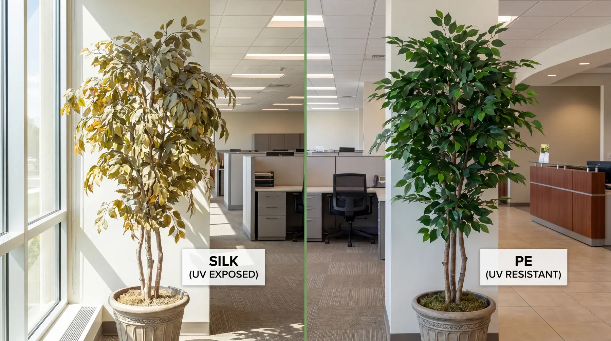
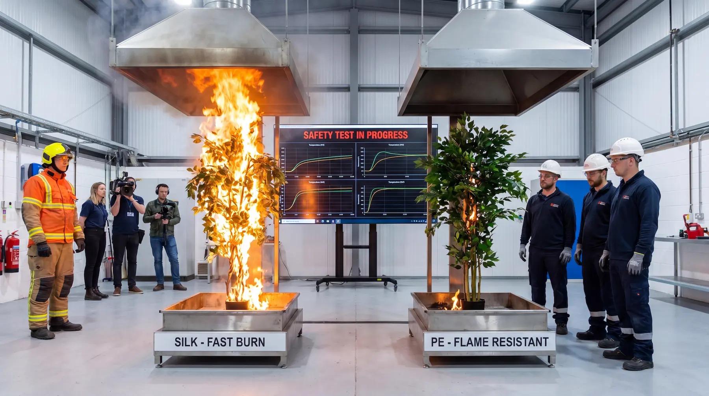

The Silk Myth: Why PE Artificial Plants Are Now the Commercial Standard
For decades, silk artificial plants were the go-to choice for commercial spaces. But the era of silk is over. Polyethylene (PE) artificial plants have emerged as the new commercial standard, offering superior durability, safety, and cost-effectiveness.
The Problem with Silk in Commercial Settings
Silk artificial plants may look beautiful initially, but they quickly reveal their limitations in commercial environments:
- UV Degradation: Silk fades rapidly in sunlight, losing color and vibrancy within months
- Dust Collection: Silk's porous texture attracts and holds dust, requiring frequent cleaning
- Fire Hazard: Most silk plants aren't fire-rated for commercial compliance
- Short Lifespan: Silk deteriorates quickly, requiring frequent replacement

Silk fades and yellows under UV exposure; PE retains color for 5+ years in the same conditions.
The PE Advantage: Technical Superiority
Polyethylene (PE) artificial plants solve these commercial challenges:
1. UV Resistance That Lasts Years
PE plants are engineered with UV-resistant materials that maintain their color and integrity for 5+ years, even in direct sunlight. This makes them ideal for:
- Outdoor restaurant patios
- Hotel lobbies with natural light
- Office atriums and skylights
- Shopping mall entrances
For deeper detail on UV ratings and outdoor specification, see our Outdoor UV Rating Guide.
2. Realistic Textures That Don't Collect Dust
Unlike silk's porous surface, PE plants have realistic textures that naturally repel dust. This means:
- 80% less cleaning required
- Consistent appearance year-round
- Reduced maintenance costs
PE foliage holds its appearance year-round with minimal dusting — a major advantage in high-traffic corporate environments.
3. Commercial Fire Ratings
PE artificial plants meet commercial fire safety standards, making them suitable for:
- Office buildings
- Hotels and resorts
- Healthcare facilities
- Educational institutions

Side-by-side fire safety test: silk ignites in seconds; PE compound-treated foliage resists the flame and self-extinguishes.
Compound fire-retardant PE foliage holds its certification at annual inspection without re-treatment. For the full code breakdown, read our NFPA 701 explainer.
4. Cost-Effective Long-Term Investment
While PE plants may have a higher initial cost, their longevity delivers significant ROI:
- 40–60% lower total cost of ownership over 5 years
- No replacement costs for 5+ years
- Reduced maintenance expenses
Run the numbers for your own project with the Maintenance Savings Calculator.
Factory Direct Advantage
At LaySun, we're factory direct, cutting out the middleman markup. Commercial clients save 40–60% on artificial foliage projects compared to traditional suppliers. Every product is made in our own facility using compound-treated PE foliage — no surface sprays, no resold inventory.
Making the Switch: What Commercial Buyers Need to Know
When transitioning from silk to PE artificial plants, consider:
- Material Specifications: Look for UV-resistant polyethylene with fire ratings
- Installation Requirements: PE plants are typically heavier and may require different mounting
- Maintenance Schedule: Reduced cleaning frequency but proper initial setup
- Supplier Verification: Ensure factory direct pricing and commercial-grade quality
The specifying checklist for interior designers walks through each of these points in procurement detail.
The Bottom Line
The silk era is over. PE artificial plants offer commercial facilities superior durability, safety compliance, and long-term cost savings. For facility managers, procurement directors, and commercial designers, the switch to PE isn't just an upgrade — it's a smart business decision.
Ready to upgrade your commercial space? Contact us for samples and commercial pricing.
Upgrade from silk to commercial-grade PE
Every LaySun product uses UV-stable, fire-treated PE foliage — built for commercial conditions, priced direct from the factory.
View Product Catalogue Our Manufacturing Process Request a Quote →